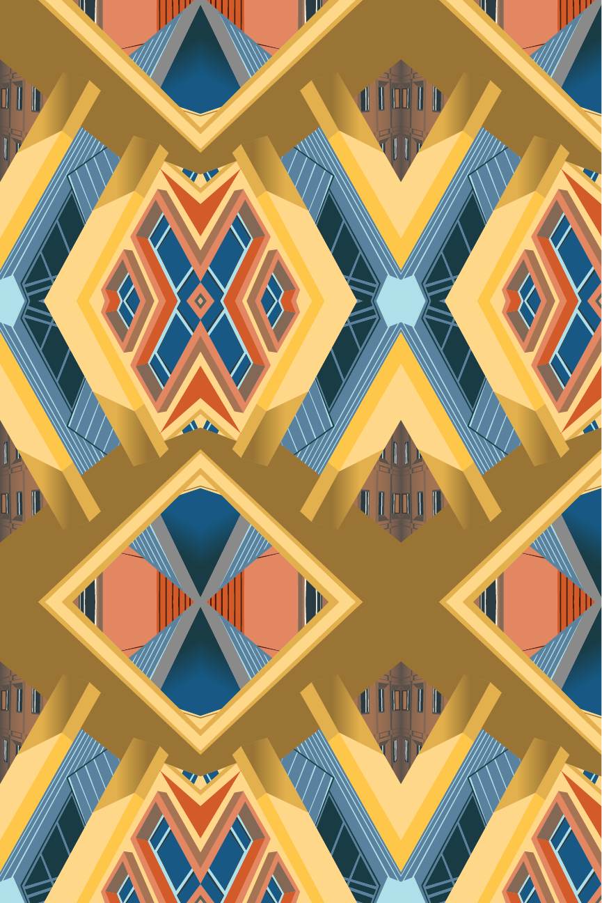

Architecture Pattern
Course: Design Fundamentals, Fall 2022, Print
This is a pattern created using different photographs I took from around my school campus. I collaged features of the buildings together and replicated them in Adobe Illustrator. For this pattern, I wanted to use linear and rectilinear shapes from buildings to create an angular pattern. The pattern is formatted to have triangular shapes as the main focus points.